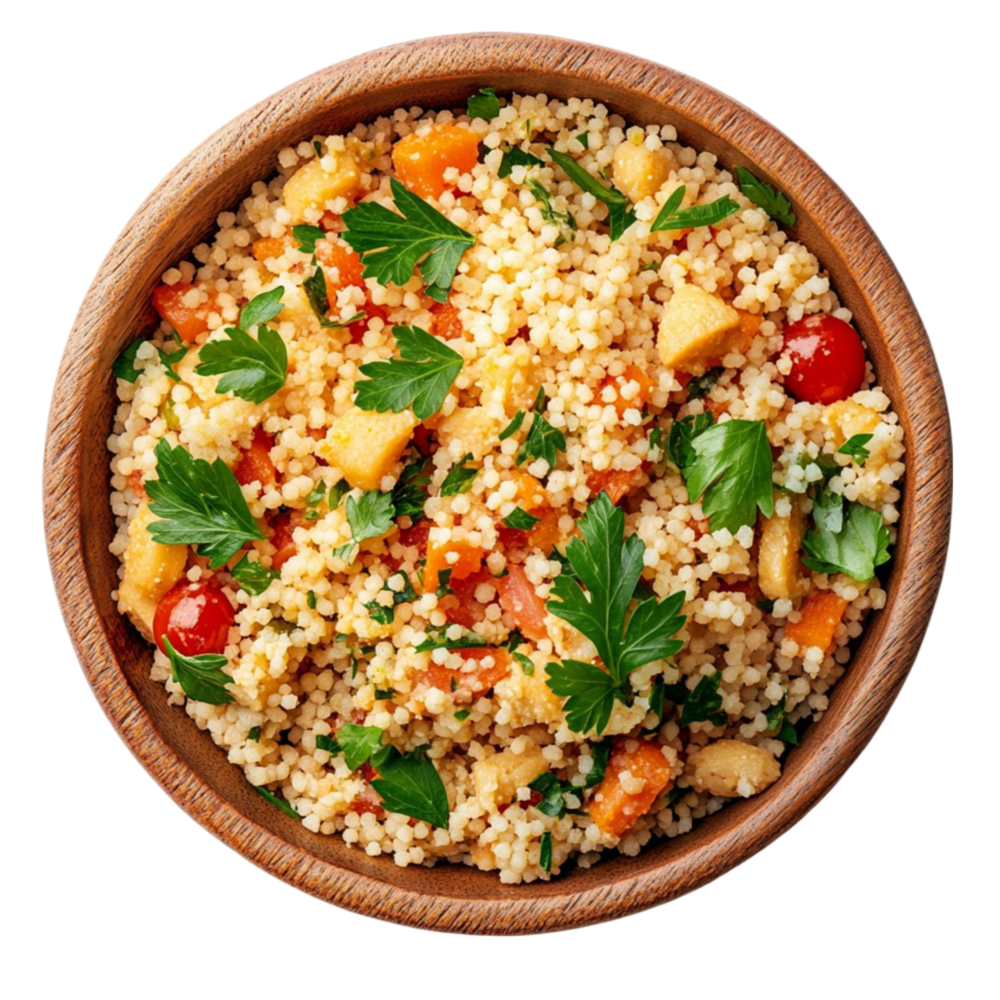

Tabulé

Tiempo de preparación: 15 minutos Porciones: 6 Dificultad: fácil
Ingredientes
- 1/2 taza de trigo burgol
- 3 tomates
- 1 pepino
- 1 cebolla pequeña o 1/2 grande
- 1 manojo grande de perejil (1 taza aprox.)
- 1 manojo más pequeño de menta (más o menos 1/4 de lo que pusimos de perejil)
- Sal, limón y aceite de oliva
Preparación
- Lo primero es remojar el trigo burgol: cubrir apenas con agua caliente y dejar una 1/2 hora. Si hay exceso de agua, retirarla, tiene que quedar lo más seco posible.
- Cortar el pepino, la cebollay los tomates, a mí me gustan en cuadraditos muy pequeños, pero puede ser de otra manera.
- Picar el perejil y la menta de forma grosera, no demasiado pequeño.
- Mezclar todo bien mezcladito y condimentar con sal, bastante jugo de limón y aceite de oliva.